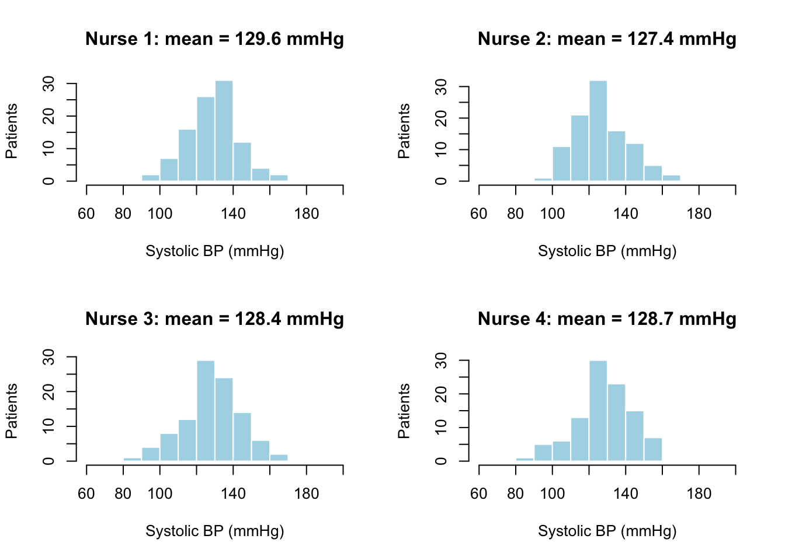

8 Sampling
8.1 Population Versus Sample
A population is the entire group of individuals/items we wish to investigate and draw conclusions about. It is often unreasonable or impossible to observe or measure all individuals of a population, so in practice we take a sample of individuals. In Topic 3, we addressed the importance of random sampling as a way to help draw fair conclusions.
Example 8.1 A city wants to determine the need for additional bus routes among city residents. Since it isn’t practical to ask everyone, the transportation department randomly selects 800 households and asks how often they would use a new bus route if one were added near them.
- Population: all residents of the city.
- Sample: the 800 randomly selected households that were surveyed.
Example 8.2 A quality control engineer at a factory wants to know the average lifetime of the light bulbs produced on a particular assembly line. Testing a bulb means running it until it burns out, so testing every bulb would leave nothing to sell. Instead, the engineer pulls 50 bulbs at random from the week’s production and records how many hours each one lasts.
- Population: all light bulbs produced on that assembly line.
- Sample: the 50 bulbs that were tested.
Example 8.3 A university wants to know how many hours per week its undergraduates spend working at paid jobs. The registrar’s office randomly selects 300 students from the enrollment list and sends them a short survey.
- Population: all undergraduate students enrolled at the university.
- Sample: the 300 students selected to receive the survey.
The goal of taking a sample is to try to draw conclusions about the entire population, however we should not expect the sample to exactly reveal the underlying population behavior. Moreover, from sample to sample, we expect variation. This is known as sampling variability.
Example 8.4 Four research nurses each record the systolic blood pressure of 100 randomly selected adults visiting the same hospital’s outpatient clinic.
We see that each of the nurses records a slightly different mean and distribution. The population in this case is all the clinic’s patients, however each nurse only sees a sample of that. This is sample variability.
A parameter is a number that describes the population, while a statistic is a number that describes a sample. We may not know parameters, but they have some underlying single value. A statistic, depends on the sample I take. In the above example, each nurse records a different mean. These means are statistics and they depend on the sample that was taken.
| Parameter (Population) | Statistic (Sample) | |
|---|---|---|
| Proportion | \(p\) | \(\hat{p}\) |
| Mean | \(\mu\) | \(\bar{x}\) |
| Standard Deviation | \(\sigma\) | \(s\) |
A principle question we want to answer is how close are the statistics to the parameters? For example, how close are the nurse’s means to the actual population mean (a parameter).
8.2 Sample Proportion
Example 8.5 A college wants to know what proportion of their most recent graduates have a job six months after graduating. The college randomly samples 500 graduates and finds that 64% of graduates in the sample have a job, so \(\hat{p} = 0.64\).
We can think of the sample proportion as a random variable that changes depending on the sample I take.
Example 8.6 Claudia and Joey want to know what proportion of their classmates have already finished Homework 4. Claudia samples 20 peers and finds that 32% of them have finished Homework 4. Joey samples a different 20 peers and finds that 39% of them have finished Homework 4.
If we collected a bunch of sample proportions from different random samples, the distribution of these values would be approximately normal. This is a result of the Central Limit Theorem.